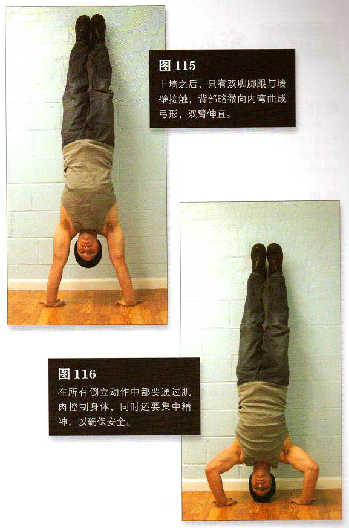

找一面墙，双手手掌平放在距离墙根约 15一 25 厘米的地面上，双手与肩同宽。双膝曲，蹬起靠墙成倒立姿势。如果你从前几式一路练过来，那现在对此过程必然了如指掌。如果你已经找到了适合自己的上墙技巧，那也很好。重要的是培养肌肉，而不是上墙的方式。上墙之后，只有双脚脚跟与墙壁接触，背部略微向内弯曲成弓形，双臂伸直。这是该动作的起始姿势（图 1巧）。弯曲肘部，直到头顶轻轻接触地板。这是该动作的结束姿势（图 116）。使用“亲亲宝贝”的方法保护头部（参见第 37 页）。暂停 1秒钟，然后推起身体，回到起始姿势。在所有倒立动作中都要通过肌肉控制身体，同时还要集中精神，以确保安全。尽量保持平缓呼吸。
初级标准：1 组，5 次
中级标准：2 组，各 10 次
高级标准：2 组，各 15 次